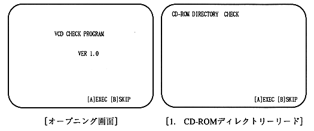
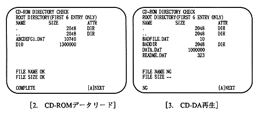

Return to previous page ｜ Return to menu ｜ Go to next page
Basic operation method
operation is performed only with the A and B buttons on the pad. The A button executes the test item. The A button is also used to move to the next item. Press B to cancel the item. The S button always returns to the opening.

[Opening screen]
Press A button to move to the first test item.
[1. CD-ROM directory read]
Displays a directory in ISO9660 format. Only the first 8 entries in the root directory (substantially 6 entries, including self and parent) are displayed. Also displays directory attributes.
An OK message is displayed when the specified file name and size are used.
When the check is completed, COMPLETE is displayed on the bottom line. An error message is displayed if it is different or not readable.

[2.CD-ROM data read]
ABCDEFG1.DAT and D10 are known, so check them by reading and comparing the data. When finished, COMPLETE is displayed on the bottom line and it waits for A button input.
Return to previous page ｜ Return to menu ｜ Go to next page